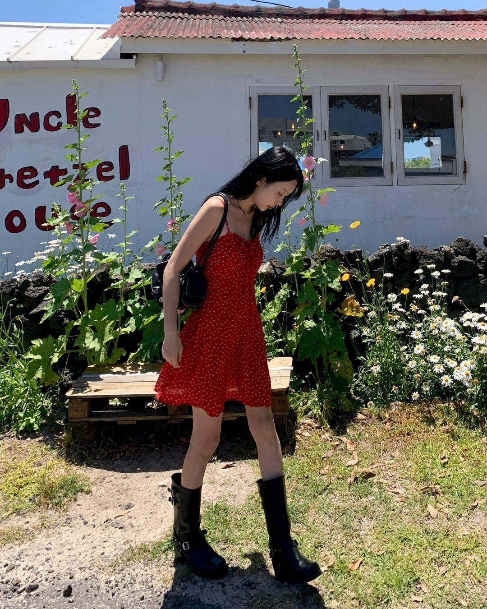
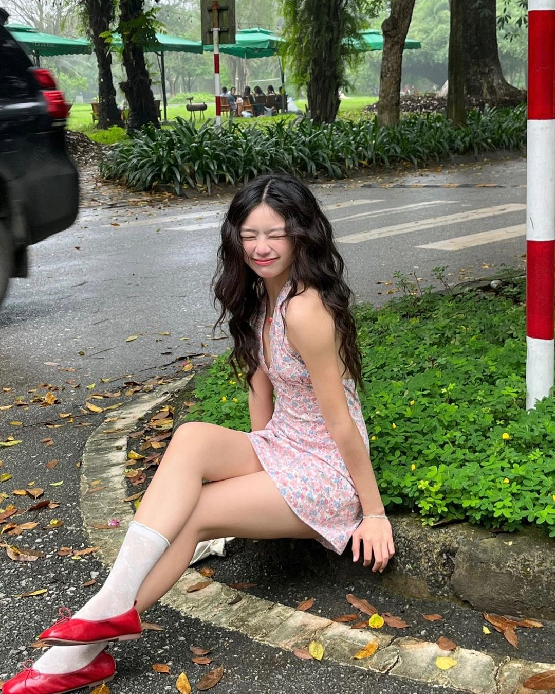
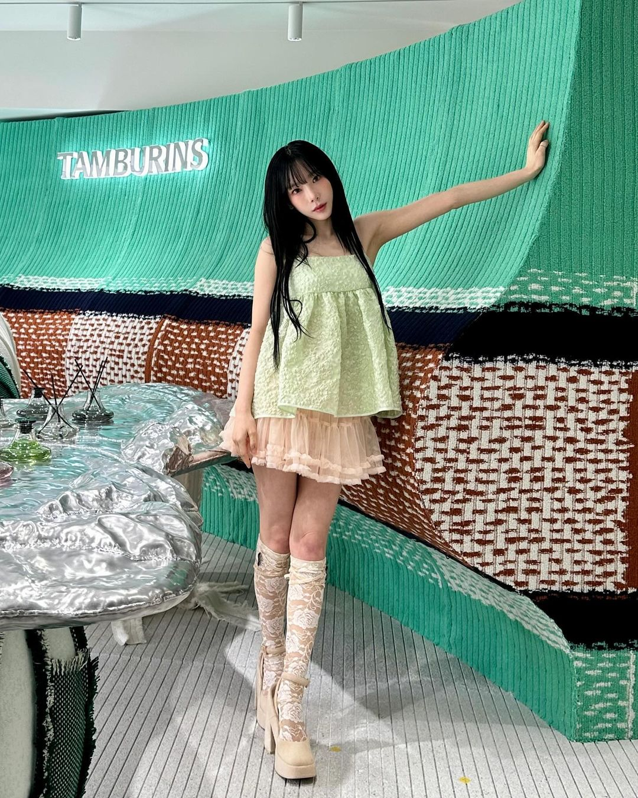
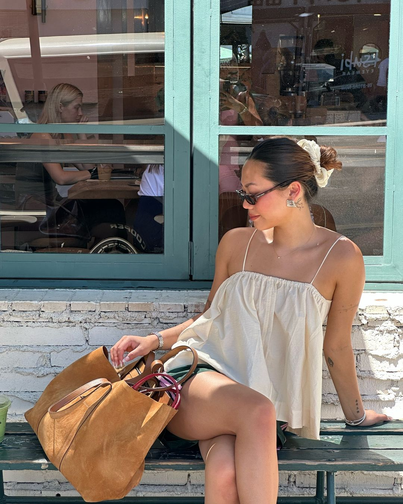
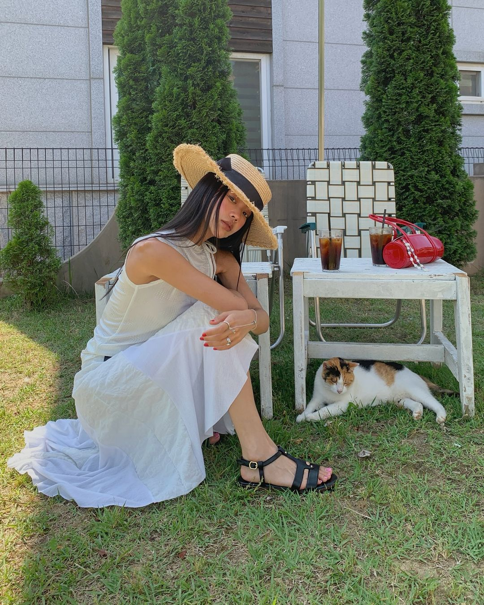
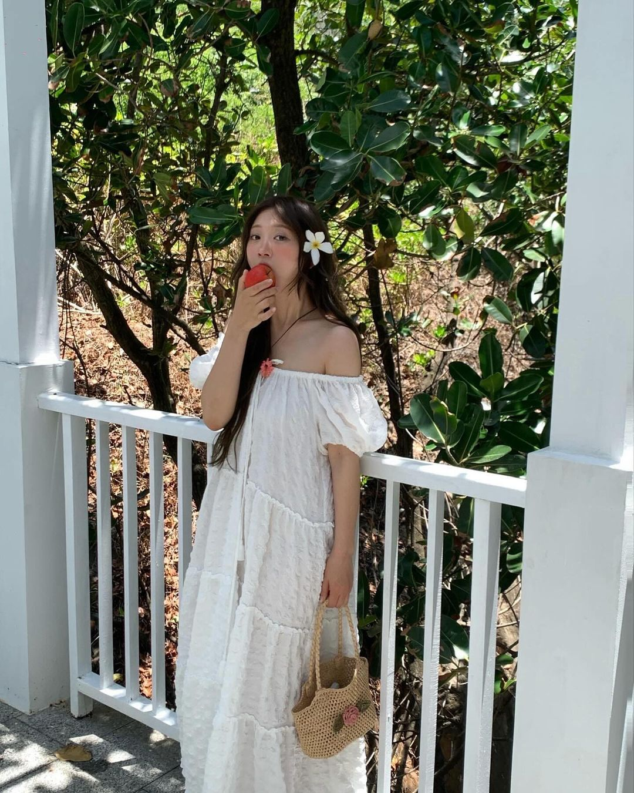
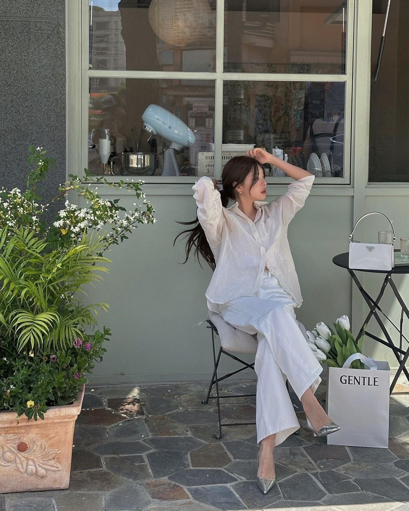
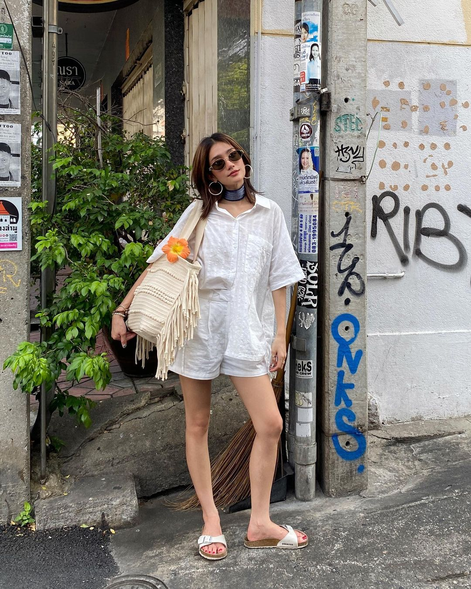

DẠO QUANH KHU VƯỜN MÙA HÈ CÙNG AESTHETIC THỜI TRANG “CÔ NÀNG LÀM VƯỜN”
Thẩm mỹ thời trang “garden girl” (tạm dịch: cô nàng làm vườn) mang đến sự kết hợp ngọt ngào giữa vẻ đẹp nữ tính, thanh lịch và sự thoải mái, tự do.
Mùa Hè luôn là thời điểm lý tưởng để các cô nàng thỏa sức sáng tạo và thể hiện gu thời trang cá nhân của mình. Trong đó, aesthetic (thẩm mỹ thời trang) “garden girl” – cô nàng làm vườn đang ngày càng được ưa chuộng bởi sự nhẹ nhàng, tươi mới và gần gũi với thiên nhiên. Lấy cảm hứng từ hình ảnh cô gái trong vườn,”garden girl” mang đến sự kết hợp hoàn hảo giữa sự nữ tính và thoải mái, lý tưởng cho những ngày Hè năng động. Cùng điểm danh những món đồ không thể thiếu để hoàn thiện phong cách “làm vườn” điệu đà và cuốn hút cho mùa Hè này.
“NỞ RỘ” KHU VƯỜN ĐẦY NẮNG VỚI CHIẾC VÁY HOA XINH
Váy hoa là một trong những món đồ đặc trưng nhất của aesthetic “garden girl”. Những họa tiết hoa nhỏ xinh, tươi tắn mang đến cảm giác mát mẻ và lãng mạn, tạo nên vẻ ngoài ngọt ngào và duyên dáng. Các cô nàng có thể chọn item đầm hoa với nhiều kiểu dáng khác nhau, từ dáng maxi dài thướt tha đến váy ngắn trẻ trung. Màu sắc của váy hoa thường là những tông màu pastel nhẹ nhàng như hồng, xanh dương, vàng nhạt, mang lại sự dịu dàng và nữ tính. Váy hoa không chỉ phù hợp để dạo phố, đi biển mà còn rất lý tưởng cho những buổi picnic hay các bữa tiệc ngoài trời.


ÁO BABYDOLL LAN TOẢ NĂNG LƯỢNG TRẺ TRUNG
Áo dáng babydoll là một item không thể thiếu trong tủ đồ của những cô nàng yêu thích aesthetic “garden girl”. Với thiết kế rộng rãi, thoáng mát, áo babydoll mang lại cảm giác trẻ trung và dễ chịu, rất phù hợp cho những ngày Hè oi bức. Kiểu dáng áo babydoll thường có phần thân trên ôm sát và phần dưới xòe rộng, giúp che khuyết điểm cơ thể và tôn lên vẻ dễ thương, ngọt ngào của người mặc. Các cô nàng có thể kết hợp áo babydoll với quần jeans, chân váy hoặc quần shorts để tạo nên những bản phối đồ đa dạng và phong cách.


QUẦN SHORTS CHIẾM VỊ TRÍ CHỦ ĐẠO
Quần shorts là một món đồ có độ “phủ sóng” cao nhất trong dịp Hè này, đặc biệt là trong phong cách “cô nàng làm vườn” đầy tính gợi. Với thiết kế ngắn, thoải mái, quần shorts giúp các cô nàng dễ dàng vận động và cảm thấy thoải mái suốt cả ngày dài. Quần shorts có thể được làm từ nhiều chất liệu khác nhau như denim, cotton hay linen, mỗi loại đều mang lại cảm giác thoáng mát và thoải mái. Sự đa nhiệm của item quần shorts có thể kết hợp với đa dạng các loại trang phục đa phong cách. Bên cạnh đó, các món trang sức nhẹ nhàng như vòng cổ, vòng tay bằng hạt, hoa tai nhỏ xinh cũng góp phần làm nổi bật vẻ nữ tính và duyên dáng của phong cách “garden girl” tinh nghịch.
DÁNG ĐẦM TRẮNG THƯỚT THA LÝ TƯỞNG CHO AESTHETIC “GARDEN GIRL”
Đầm trắng luôn là biểu tượng của sự tinh khiết, thanh thoát và không thể thiếu trong xu hướng mùa Hè năm nay. Với sự đa dạng về kiểu dáng và chất liệu, đầm trắng mang đến vẻ đẹp thanh lịch, trang nhã nhưng không kém phần nữ tính. Các cô nàng có thể chọn đầm trắng với chất liệu ren, cotton hoặc lụa để tạo nên vẻ ngoài nhẹ nhàng, bay bổng. Đầm trắng rất dễ phối hợp với các phụ kiện như mũ rộng vành, kính mát và giày sandals, tạo nên một vẻ ngoài hoàn hảo cho những khoảnh khắc dạo chơi mùa Hè ấn tượng.


ỨNG DỤNG BẢN PHỐI LINEN TRONG AESTHETIC “GARDEN GIRL”
Linen là chất liệu lý tưởng cho mùa Hè bởi tính thoáng mát, nhẹ nhàng và khả năng thấm hút mồ hôi tốt. Trong aesthetic “garden girl”, các bản phối đồ từ linen luôn mang lại sự thoải mái và phong cách. Các cô nàng có thể chọn những chiếc váy linen, quần linen hay áo sơ mi linen để tạo nên những bộ trang phục dễ chịu và đầy phong cách. Màu sắc của trang phục linen thường là những gam màu trung tính như trắng, be, xanh nhạt, giúp tạo nên vẻ ngoài dịu dàng, tinh tế. Thẩm mỹ thời trang “garden girl” mang đến sự kết hợp hoàn hảo giữa vẻ đẹp nữ tính, thanh lịch và sự thoải mái, tự do. Mùa Hè năng động sẽ trở nên thú vị và đáng nhớ hơn khi bạn tự tin khoác lên mình những bộ trang phục mang đậm hơi thở của thiên nhiên và hoa lá.

